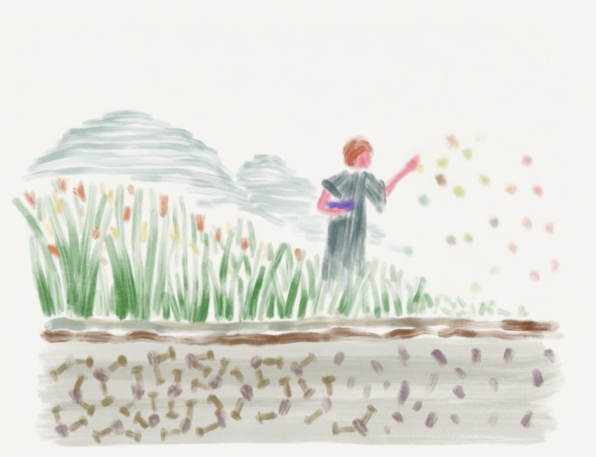

Our Research Projects
Financial Mule Detection
Building a deep learning model in collaboration with a large private lender to detect money mules and illicit fund transfers in real-time, tackling severe class imbalance and noisy labels.
Low-Frequency Trading Strategies
Bringing structure to factor modelling in the Indian equity market by analyzing historical predictors and using deep ML to develop robust, data-driven investment and trading strategies.
Estimating Economic Damage from Climate Change in India
Leveraging high-resolution climate forecasts and causal inference techniques to quantify the potential economic costs of climate change on agriculture, mortality, and labor productivity across Indian districts.
Weather Modelling
Fine-tuning large, global Machine Learning models (like Graphcast) with local datasets to create a more accurate, efficient, and low-cost weather forecasting system for India.
Learning Exponentially Twisted Distributions with Diffusion
Developing new training objectives and sampling techniques for diffusion models to learn complex, reweighted distributions, with applications in risk analysis, rare-event simulation, and controlled image generation.

The Darjeeling Revival Project
An interdisciplinary initiative to enhance natural carbon sequestration and revitalize degraded soils in the Eastern Himalayas using Enhanced Rock Weathering (ERW) and geostatistical modeling.
Political Economy of Environmental Regulation in India
Combining administrative data with high-resolution satellite imagery and ML to examine the effectiveness of environmental regulation, measure ease of doing business, and systematically detect illegal mining activity.